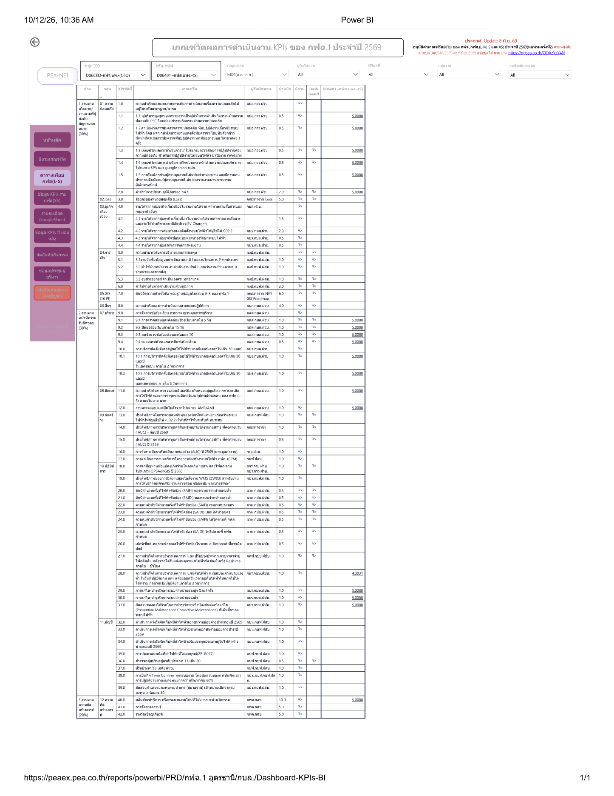

คะแนนภาพรวม ม.ค.–ก.ย.4.97คะแนนถ่วงน้ำหนัก จาก 19 ข้อที่ประเมินในรอบนี้ (น้ำหนักรวม 26)
94.7%
สัดส่วนข้อที่ได้ 5 คะแนนได้ระดับคะแนน 518 ข้อต่ำกว่า 5 คะแนน1 ข้อ
ข้อที่ได้ต่ำกว่า 5 คะแนน
ข้อ 28 · ความสำเร็จในการบริหารเหตุการณ์ แผนดับไฟฟ้า หม้อแปลงจำหน่ายแรงต่ำ ในวันที่ปฏิบัติงาน และ แจ้งข้อมูลวันเวลางดจ่ายไฟฟ้าให้แก่ผู้ใช้ไฟได้ทราบ ก่อนวันเริ่มปฏิบัติงานภายใน 3 วันทำการ
10.ปฏิบัติการ · ผมร.กบช.ฝปบ.
4.3031คะแนน
1.0น้ำหนัก
−0.0268คะแนนภาพรวมที่หายไป
5.00ถ้าข้อนี้ได้ 5 คะแนน
ผลรายข้อ (ประเมินในรอบ ก.ย. 2569)
| ข้อ | เกณฑ์วัด (กลุ่ม · ผู้รับผิดชอบ) | น้ำหนัก | คะแนน |
|---|---|---|---|
| หมวด 1 งานตามนโยบาย / งานที่ผู้บังคับบัญชามอบหมาย 6 ข้อ | |||
| 1.1 | ผู้บริหารเป็นผู้นำในการดำเนินกิจกรรมด้านความปลอดภัย (PSC)01.ความปลอดภัย · ผปอ.กวว.ฝวบ. | 0.5 | 5.0000 |
| 1.2 | สุ่มตรวจสอบความปลอดภัยทีมปฏิบัติงาน ไตรมาสละ 1 ครั้ง01.ความปลอดภัย · ผปอ.กวว.ฝวบ. | 0.5 | 5.0000 |
| 1.3 | เกณฑ์วัดผลการดำเนินการนำโปรแกรมตรวจสอบการปฏิบัติงานด้วยความปลอดภัย สำหรับการปฏิบัติงานในระบบไฟฟ้า มาใช้งาน (WeSafe)01.ความปลอดภัย · ผปอ.กวว.ฝวบ. | 0.5 | 5.0000 |
| 1.4 | เกณฑ์วัดผลการดำเนินการฝึกซ้อมตระหนักด้านความปลอดภัย ผ่านโปรแกรม SPA และ google sheet กปภ.01.ความปลอดภัย · ผปอ.กวว.ฝวบ. | 0.5 | 5.0000 |
| 1.5 | คัดเลือกช่างผู้ควบคุมงานดีเด่น และมอบประกาศนียบัตร01.ความปลอดภัย · ผปอ.กวว.ฝวบ. | 0.5 | 5.0000 |
| 2 | ค่าดัชนีการประสบอุบัติภัยของ กฟภ.01.ความปลอดภัย · ผปอ.กวว.ฝวบ. | 2.0 | 5.0000 |
| หมวด 2 งานตามหน้าที่ความรับผิดชอบ 12 ข้อ | |||
| 9.1 | การตรวจสอบและติดต่อผู้ร้องเรียนภายใน 5 วัน07.บริการ · ผลส.กบล.ฝวบ. | 1.0 | 5.0000 |
| 9.2 | ปิดข้อร้องเรียนภายใน 15 วัน07.บริการ · ผลส.กบล.ฝวบ. | 1.0 | 5.0000 |
| 9.3 | ลดจำนวนข้อร้องเรียนร้อยละ 1007.บริการ · ผลส.กบล.ฝวบ. | 1.0 | 5.0000 |
| 9.4 | ความครบถ้วนเอกสารปิดข้อร้องเรียน07.บริการ · ผลส.กบล.ฝวบ. | 0.5 | 5.0000 |
| 10.1 | การบริการติดตั้งมิเตอร์ผู้ขอใช้ไฟฟ้าขนาดมิเตอร์แรงต่ำไม่เกิน 30 แอมป์ ในเขตชุมชน ภายใน 2 วันทำการ07.บริการ · ผบธ.กบล.ฝวบ. | 1.0 | 5.0000 |
| 10.2 | การบริการติดตั้งมิเตอร์ผู้ขอใช้ไฟฟ้าขนาดมิเตอร์แรงต่ำไม่เกิน 30 แอมป์ นอกเขตชุมชน ภายใน 5 วันทำการ07.บริการ · ผบธ.กบล.ฝวบ. | 1.0 | 5.0000 |
| 11 | ความสำเร็จในการตรวจสอบมิเตอร์ป้องกันหน่วยสูญเสียจากการละเมิดการใช้ไฟฟ้าและการชำรุดของมิเตอร์และอุปกรณ์ประกอบ ของ กฟฟ.(L-S) ตามนโยบาย ผวก08.มิเตอร์ · ผมต.กบล.ฝวบ. | 1.0 | 5.0000 |
| 12 | งานตรวจสอบ และปิดใบสั่งจากโปรแกรม AMR/AMI08.มิเตอร์ · ผมต.กบล.ฝวบ. | 1.0 | 5.0000 |
| 28 | ความสำเร็จในการบริหารเหตุการณ์ แผนดับไฟฟ้า หม้อแปลงจำหน่ายแรงต่ำ ในวันที่ปฏิบัติงาน และ แจ้งข้อมูลวันเวลางดจ่ายไฟฟ้าให้แก่ผู้ใช้ไฟได้ทราบ ก่อนวันเริ่มปฏิบัติงานภายใน 3 วันทำการ10.ปฏิบัติการ · ผมร.กบช.ฝปบ. | 1.0 | 4.3031 |
| 29 | การแก้ไข-บำรุงรักษาระบบจำหน่ายแรงสูง ปีละ2ครั้ง10.ปฏิบัติการ · ผบร.กบช.ฝปบ. | 1.0 | 5.0000 |
| 30 | การแก้ไข-บำรุงรักษาระบบจำหน่ายแรงต่ำ10.ปฏิบัติการ · ผบร.กบช.ฝปบ. | 1.0 | 5.0000 |
| 31 | สัดส่วนของค่าใช้จ่ายในการบำรุงรักษาเชิงป้องกันต่อเชิงแก้ไข (Preventive Maintenance Corrective Maintenance) ที่เพิ่มขึ้นของระบบไฟฟ้า10.ปฏิบัติการ · ผบร.กบช.ฝปบ. | 1.0 | 5.0000 |
| หมวด 3 งานตามความคิดสร้างสรรค์ 1 ข้อ | |||
| 40 | ผลิตภัณฑ์หรือกระบวนงานใหม่ที่ได้จากนวัตกรรม12.ความคิดสร้างสรรค์ | 10.0 | 5.0000 |
หน้าจอ Dashboard-KPIs-BI

ที่มา: Power BI Dashboard-KPIs-BI (กฟฉ.1 อุดรธานี) หน้าเกณฑ์วัดผลการดำเนินงาน KPIs ปี 2569 · D06401 กฟส.บพง.(S) · M09 · พิมพ์ 12 ต.ค. 2569
หมายเหตุ
- Dashboard รอบนี้แสดงเฉพาะข้อที่ประเมินในเดือน ก.ย. (19 จาก 55 ข้อ) คะแนนภาพรวมคิดจากข้อเหล่านี้เท่านั้น ไม่นำคะแนนเดือนก่อนมารวม
- คะแนนภาพรวม = Σ(น้ำหนัก × คะแนน) ÷ Σน้ำหนัก (4.9732) คำนวณจากตัวเลขใน Dashboard เนื่องจากหน้า Dashboard ไม่แสดงคะแนนรวม
- ข้อที่ยังไม่อยู่ในรอบประเมินนี้ไม่ได้แปลว่าได้ 0 คะแนน